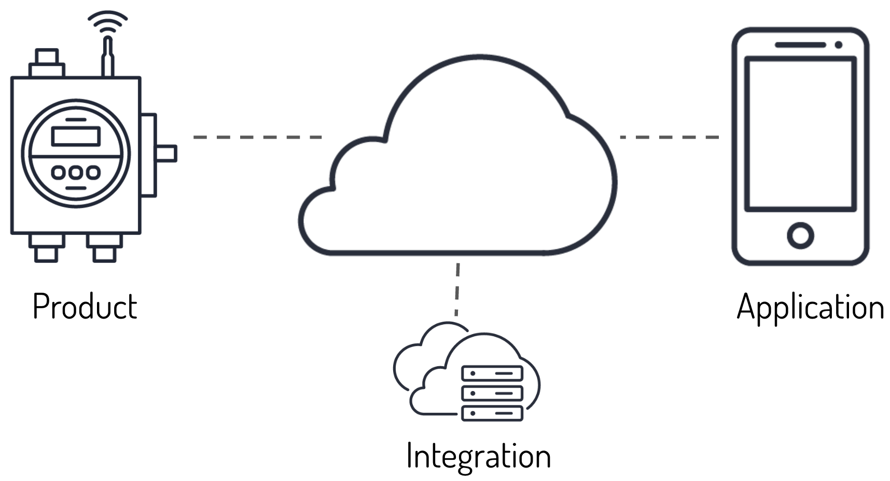
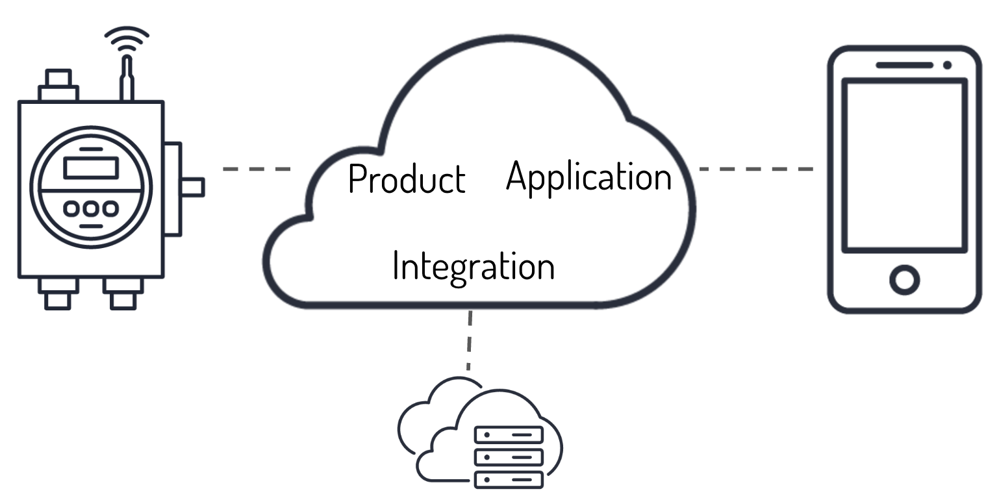
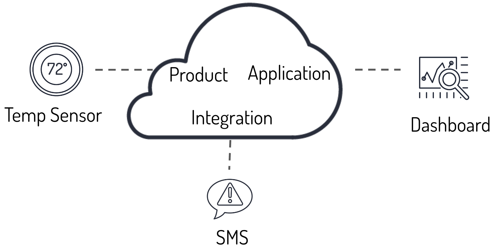
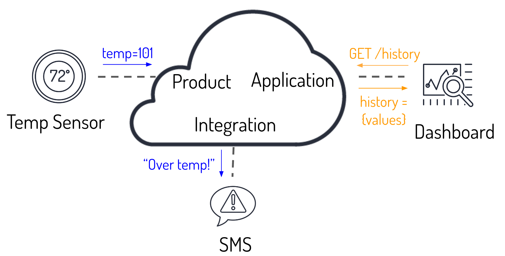
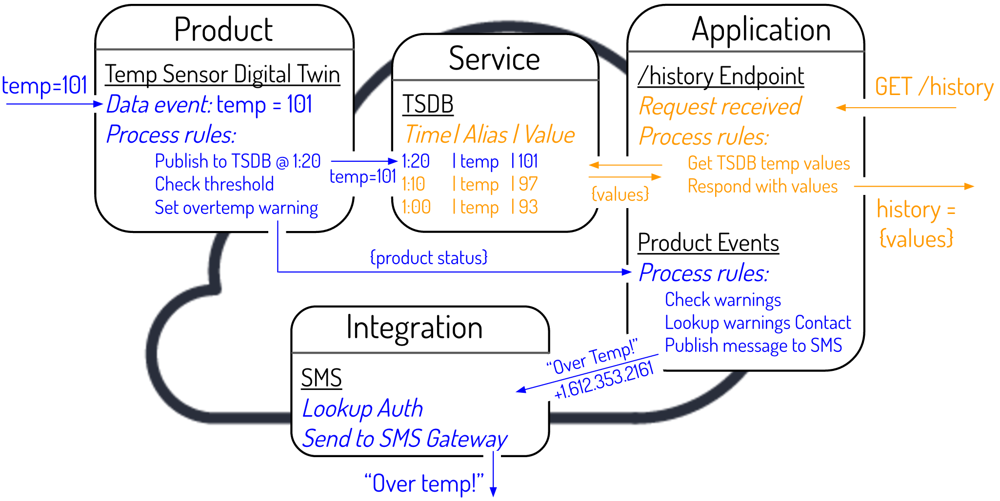

Data Flow in Murano
The basic components of an IoT system are Internet-connected hardware Products, real-time User Applications, and Integrations with external web & IT services. As a Murano developer, to get these components working together, it is helpful to understand how the data flows within Murano. This guide walks through a Murano data flow involving each of these basic components.

There are representations of these components inside of Murano—you have to set up and configure Products, Applications, and Integrations to get the full IoT system working.

For simplicity in this guide, the physical components are replaced with a temperature sensor, a web page showing a graph, and an SMS messaging service.

In this simplified system, a temperature sensor will communicate temperature every 10 minutes, make it so the temperature history can be viewed as a graph on a website, and automatically send an SMS message if the temperature exceeds 100 C.
To make that happen:
- Product: Every 10 minutes, the temperature sensor wakes up, measures the temperature, and sends the value as the variable "temp" via one of the Murano data APIs (e.g., the HTTP API).
- Application: Upon User load (or auto-refresh), the web page fetches the temperature history from a configured API Application that exposes a /history URL endpoint that returns the last N number of temperature values.
- Integration: As soon as the system detects that the data exceeds the 100 C threshold, an SMS message is sent out by an SMS gateway service to a user's phone.

Of course, the temperature sensor's data transmissions and the web page's data requests are done at different times. This is shown in the following diagram by:
- Blue: data flow proceeding from the temperature sensor data
- Orange: data flow proceeding from the web page request

Inside of Murano, this is what is happening:
Project Configuration
A Product called "Temp Sensor" was created to authenticate temperature sensor Devices and to manage all aspects of the Devices—all device traffic uses the Product URL created when the Product is instantiated. An Application called "Dashboard" was created to authenticate Users and to respond to User-driven events on a web page—configurable API Endpoints at the Application URL are created when the Application is instantiated. The Integration service for Twilio was added to send out SMS messages. And, the TSDB Service is available to all Projects as a built-in Service. All Built-In Services are available to the Rules Engines for both the Product and the Application.
Blue Path
When the Murano data API receives the "temp=101" payload, it triggers a data event for the Product to which the specific Device belongs (see Device Management for more information on Product/Device taxonomy). The Rules Engine for that Product has been set up to do some housekeeping on Product data events:
- Store the data in the TSDB Service.
- Check the "temp" value and set a warning flag in a "product status" array.
When the warning flag is set in the product status array, that message is carried internal to Murano to the Application's "Product" websocket interface where Rules specific to the Application are run:
- Check the "product status" array for warnings.
- Look up the User contact information assigned as the alert recipient for an over-temperature warning.
- Send a message, "Over Temp!" to the alert recipient via Murano's SMS Integration service for Twilio.
Orange Path
The Web Page issues a GET request to the Application URL's "/history" endpoint. The "/history" endpoint was created and configured to execute Rules specific to that endpoint:
- Fetch the last N TSDB service temperature values.
- Return the values as a response to the GET request on /history.
Conclusions
Those are the basics of how Murano Products, Applications, and Integrations work. Although much of the information here was simplified/pseudo-codified (Device management & authentication, using Services to accomplish more, and User/permission control were only skimmed over), these basic transactions can be scaled to many Products, many Applications, and many Integrations—all with many more Devices, Users, and Web Services represented in each area.
To put these concepts into action, the Lightbulb Quick Start Guide is recommended to get you started on developing with your own components.
Remember, if you ever have a question, check out the Murano forum, and feel free to email support for sticky questions/problems at support@exosite.com.
 Language
Language